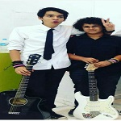
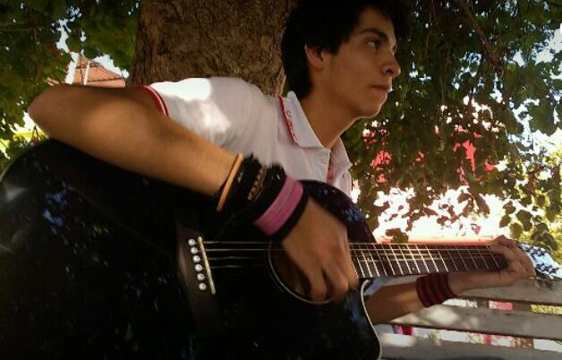

Sobre mí
Nombre Completo: Valdemar Gerzain Magaña Nicolás
Fecha de Nacimiento: 23 de Abril de 1999
Ciudad: Villa de Alvarez, Colima
Ocupación: Estudiante
Grado de estudio en curso: Licenciatura
Institución: Universidad de Colima
Facultad/Plantel: Facultad de Telemática
Contacto

Teléfono: 33-0-40-33
Celular: 312-113-61-90
Gmail:gerzainn@gmail.com
Gmail-Ucol:vmagana3@ucol.mx
Intereses Personales
Musica
Géneros: Pop-Punk, Surf-Music,
Instrumentos: Guitarra y Bajo
Proyectos: En el bachillerato comencé proyectos musicales con algunos compañeros, ninguno a un nivel profesional, pero si llegamos a tener algunas presentaciónes en un auditorio en el municipio de Comala, nuestro grupo se llama Livida Compañia, tenemos cacnciones escritas, con la intención de grabarlas y compartirlas en alguna plataforma en internet
 Estudios
Bachillerato
Bachillerato #25 UDC
Durante la prepa estuve en el área de analista programador, fue ahi donde encontré el gusto por la programación, antes de eso nunca había programado nada, sin embargo pasaba mucho tiempo en internet como cualquier otro en ese tiempo, despúes tome la decisión de estudiar esta carrera!!
Algunas materias cursadas
-
Programación Básica
- Pascal-Python
-
Progrmación Web
- HTML-CSS-PHP
- Photoshop
Tecnologías de Interes
Desarrollo Web
Personalmente me gustaría dedicarme al desarrollo web, aunque por el momento no tengo bien definido a cual de las partes, Backend/Fronted, desarrollador de pila completa. Menciono esto por que es lo que actualmente me gusta y no tengo experiencia en otro tipo de desarrollo
Desarrollo Móvil
El desarrollo par dispositivos móviles es algo que me ha llamado la atención desde hace tiempo, pero no he tenido la oportunidad de realizar algo relacionado con este tipo de desarrollo, en algún futuro me gutaria conocer más y por que no, dedicarme de lleno a esto!!